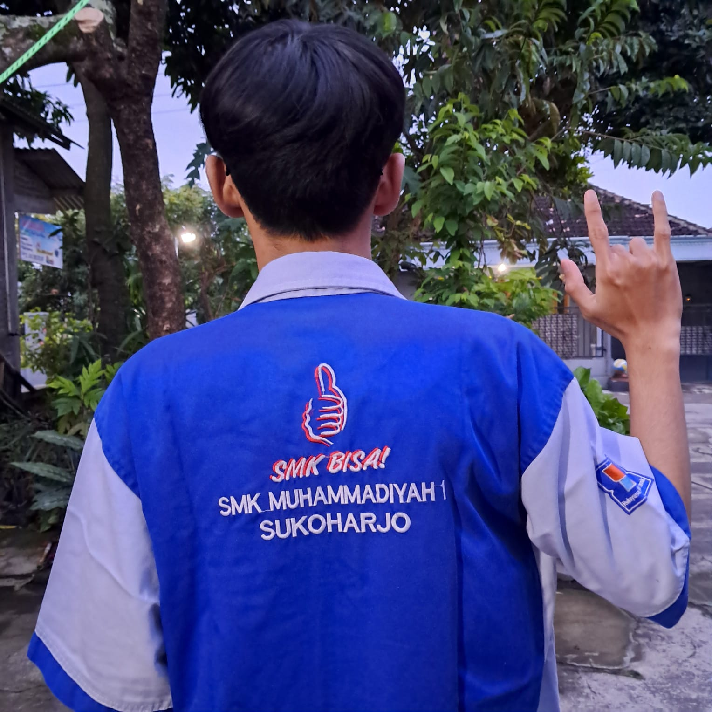

Tentang Saya
Perkenalkan, nama saya Fatoni Abdullah Luthfi. Saya memiliki minat yang besar dalam dunia teknologi dan pengembangan perangkat lunak. Saya selalu bersemangat untuk mengeksplorasi berbagai aspek dalam pengembangan software, mulai dari desain antarmuka pengguna hingga arsitektur backend yang efisien. Selain itu, saya terus berusaha memperdalam pemahaman saya dalam pemrograman, database, dan sistem berbasis web untuk menciptakan solusi digital yang inovatif dan bermanfaat. Dengan ketekunan dan rasa ingin tahu yang tinggi, saya senantiasa mencari peluang untuk belajar teknologi baru dan mengasah keterampilan saya dalam dunia pengembangan perangkat lunak.